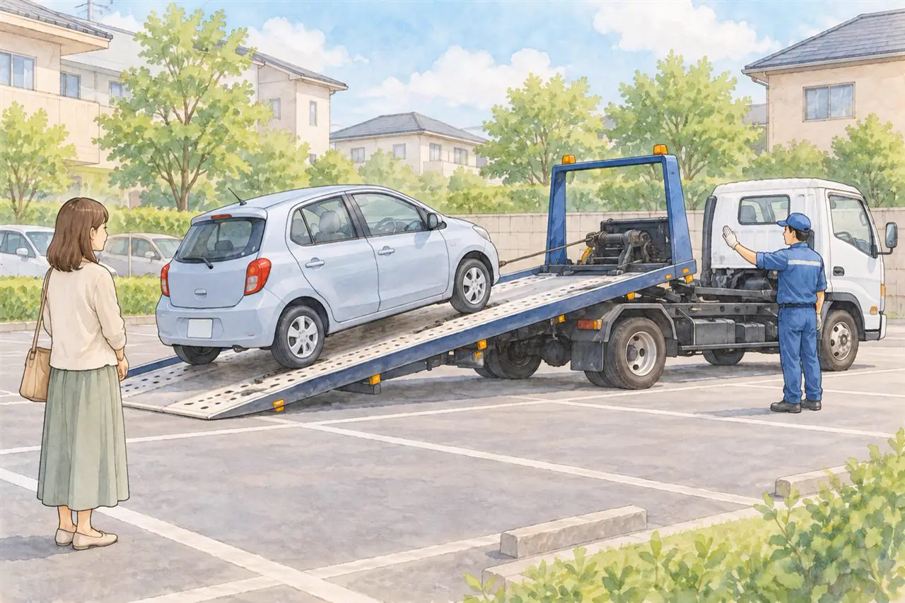

維持費がもったいないと感じている方へ
車の維持費は月いくら？
あまり乗らない車を手放すかどうかの判断の目安
公開
こんにちは、東京都足立区江北で自動車解体・廃車買取をしている「大崎商店 環七店」です。
この記事の要点
- 車は、乗らない日にもお金がかかります。
- 年1回・2年に1回の出費も、月額に直すと、負担が見えてきます。入力して計算できるフォームは、別の記事にあります。
- 代わりの交通費と比べると、手放すかどうかの目安になります。
「あまり乗らないのに、車の維持費がもったいない気がする」
「車の維持費は、月いくらかかっているんだろう」
「手放したら、いくら楽になるのか知りたい」
車は、乗らない日にも、お金がかかります。でも、1年に1回、2年に1回のお金は、月にいくらなのか、分かりにくいものです。
この記事では、車の維持費を、月額にして計算する方法と、手放すかどうかを考える目安を、やさしくご紹介します。後半では、足立区の大崎商店の場合もご案内します。
① 車の維持費には、どんなお金がある？

車を持っていると、次のようなお金がかかります。この記事は、自家用の乗用車（軽乗用車を含む）を主な例にしています。貨物車などは車検の周期が異なるので、ご自身の車の条件に合わせて計算してください。
| お金 | 払うタイミング | 月額にするには |
|---|---|---|
| 駐車場代 | 毎月 | そのまま |
| 任意保険料 | 年1回、または毎月 | 年額 ÷ 12か月 |
| 自動車税（軽自動車は、軽自動車税） | 年1回 | 年額 ÷ 12か月 |
| 車検費用（自賠責保険・重量税などを含む） | 自家用乗用車は初回3年、以後2年ごと | 継続車検は総額 ÷ 24か月。初回までの費用は下記参照 |
| 点検・修理・タイヤ・オイルなど | 不定期 | 年間の目安 ÷ 12か月 |
| 燃料代・充電代、有料道路代など | 使うたび | 毎月の合計 |
普通車の自動車税は、排気量・登録時期・用途など、軽自動車税は車種・用途・初度検査時期などで異なります。納税通知書で確認してください。自賠責保険料・重量税を車検費用に含めた場合は、別に数えないようにします。車検時に払った点検・整備・部品交換費も、ほかの点検・修理費と重ねないようにしましょう。
新車の初回車検までを見積もる場合は、購入時に払った自賠責・重量税と、その間の点検費用などを、対象となる期間に合わせて配分します。初回車検で払う費用を、すべて機械的に36か月で割るという意味ではありません。
② 月額にして、計算してみましょう
年1回、2年に1回のお金は、月にすると、いくらになるでしょうか。年額 ÷ 12か月、車検は総額 ÷ 24か月などで、月額に直せます。
金額を入力するだけで、月額・年額が分かる計算フォームは、「車の維持費は月いくら？自分の車で計算してみよう｜年払い・車検ごとの費用も月額に直せる計算フォーム」の記事にあります。購入費・ローン・次の車の積立てを分けて計算することもできます。
計算の例：ガソリンの普通乗用車で、2年ごとの継続車検を受ける場合（すべて仮定です。車検費用には自賠責・重量税等を含め、別の点検・修理費と重ねない前提です）
| 項目 | 例の金額（月） | 考え方 |
|---|---|---|
| 駐車場代 | 15,000円 | 足立区の掲載物件を参考にした仮定 |
| 任意保険料 | 6,000円 | 年72,000円 ÷ 12か月 |
| 自動車税 | 3,000円 | 年36,000円 ÷ 12か月 |
| 車検費用 | 7,000円 | 総額168,000円 ÷ 24か月 |
| 点検・修理・タイヤ等 | 5,000円 | 年60,000円 ÷ 12か月 |
| ガソリン代 | 9,000円 | 毎月の仮定 |
| 合計 | 45,000円 | 年間では540,000円 |
この例の金額は、駐車場代・保険・距離・年式・車の大きさで、大きく変わります。足立区の駐車場代は、物件・設備・車の大きさで異なります。駐車場の相場は、Park Directの足立区の掲載物件や、日本駐車場検索の足立区の相場情報などで、調べられます（掲載サイトや時期によって差があります）。
③ 手放すかどうかは、お金でどう比べる？
比べるのは、「これから、かかるお金」と「代わりの交通費」です。すでに払った購入費は、これから減るお金には数えません。
例：②の維持費45,000円に対して、週2回ほど（月8日）、往復3,000円のタクシーを使うと、月24,000円です。単純な差は、月21,000円になります（仮の数字を使った例です）。
ただし、手放しても、すぐには減らないお金があります。
- 駐車場代：契約が終わる日までは、かかります。解約の予告期間を確認しましょう
- ローンの残り：返済は続きます。くわしくは、ローンが残っている車は廃車できる？の記事をご覧ください
- 戻るお金（税金・保険）：条件があります。毎月の差とは別に考えましょう。くわしくは、廃車にするとお金は戻ってくる？還付金のことの記事をご覧ください
また車に乗るかもしれない方は、任意保険の中断証明の条件と申請期限も、保険会社に確認しましょう。
購入費の考え方や、減るお金と減らないお金の見分け方は、「車を手放すか迷ったら、お金で比べる3つのポイント」の記事で、くわしくご紹介しています。
引っ越しで車を手放すときの廃車と売却の違いは、「引っ越しで車を手放すとき、廃車と売却どちらがいい？判断の目安と、引っ越し前にやること」の記事をご覧ください。
買い替えのときに古い車をいつ手放すかは、「車を買い替えるとき、古い車はいつ・どう手放す？下取り・売却・廃車買取の考え方と、タイミングの注意」の記事をご覧ください。
④ 手放すときの方法
車を手放す方法は、車の状態で、考え方が変わります。
- 再販売できる車は、売却（中古車として売る）
- 修理費や損傷の状態などから、再販売が難しいと判断された車は、解体・再資源化を前提に引き取り
古い車や走行距離が多い車でも、修理して再販売できる場合や、解体する車に部品・資源として値段がつく場合があります。 くわしくは、古い車・10万km超えの車でも値段はつく？の記事をご覧ください。
依頼先には、買取額に還付金・返戻金の見込額を含むか、別途受け取るか、引き取り等の費用を引いた最終的な受取額・支払額を確認しましょう。中古車として売る場合は、資金管理料金を除くリサイクル料金相当額の精算も確認します。解体する車の預託済みリサイクル料金は、解体・再資源化に使われ、返金されません。
廃車にかかるお金の全体像は、廃車の手数料・解体費用・レッカー代は？の記事をご覧ください。
ご自分の車の場合が気になったら、お気軽にご相談ください。車の状態と置き場所を伺い、ご案内します。
電話で相談する03-3854-4141乗らない車を一時抹消にして、あとで再び乗るときの手続きと費用は、「一時抹消した車は、また乗れる？再登録（中古新規登録）の流れと、必要書類・費用」の記事をご覧ください。
駐車場の解約日と、車を引き渡す日の合わせ方は、「駐車場代がもったいない。乗らなくなった車は、いつ・どう手放す？解約日と引き渡し日の合わせ方」の記事をご覧ください。
よくある質問
Q. 車の維持費は、月いくらが、一般的ですか？
A. 車の種類、駐車場代、保険、走る距離などで、大きく変わります。この記事の金額は、計算の例です。ご自身の金額で、計算してみてください。
Q. あまり乗らなくても、維持費はかかりますか？
A. かかります。駐車場代、保険料、税金、車検費用などは、乗らない日にもかかります。
Q. 購入費も、維持費に入れますか？
A. 購入費は、別に考えます。手放すかどうかを決めるときは、これからかかる維持費と、代わりの交通費を比べるのが、考え方の目安です。
Q. レンタカーやタクシーの方が、安くなりますか？
A. 使い方によります。使う回数、距離、時間で変わるため、1か月の合計で、比べてください。
Q. ローンが残っていても、手放せますか？
A. 所有者の名義や、残りの金額によって、手続きが変わります。ローンの記事をご覧ください。
Q. 駐車場の解約が、間に合うか心配です。
A. 解約の予告期間を、駐車場の管理会社に確認してください。引き取りの日程は、早めに、依頼先に相談しましょう。
大崎商店の場合：車を手放す相談
ここからは、足立区の大崎商店の場合を、ご案内します。

大崎商店は、再販売できる車の買取も、解体する車の引き取りも行っています。あまり乗らなくなった車を、手放したいというご相談も、お電話で、お受けしています。
- 足立区内は、引き取り無料です
- 足立区外も、買取価格がつかない車は、環七店または入谷店から片道約30分圏内は、引き取り無料
- 買取価格がつく車は、圏外でも、所在地と車の状態によっては無料で引き取り（事前にご案内します）
- 解体費用・手続き代行費用・印紙代は、別請求しません
- ハイエースなど、トヨタ車は、値段がつきやすいです。年式・走行距離で、「ここから先は買い取れない」という線は、ありません
- 駐車場の解約日が決まっている場合も、ご相談に応じます。 引き取りのご依頼は、優先して、日程を調整しています。ご希望の期限を、事前にお電話でお伝えください。優先して調整しますが、ご希望の日までの引き取りを必ずお約束するものではありません
- 車検が残っている車は、解体などの条件を満たせば、重量税の還付等を受けられる場合があります。当店では、還付金・返戻金等の見込額を、買取価格に含め、当店が受け取る形が多くなっています。含めた分がお客様に別途、二重に支払われるわけではありません。ご自身で受け取る方法も、ご相談ください
- 車のお持ち込みは、どこからでも歓迎（基本は環七店。日時は、事前にお電話でご相談ください）
お電話で、確認すること
ご相談のお電話では、次のことをお伺いします。車検証をお手元にご用意ください。電子車検証の所有者情報は、自動車検査証記録事項や車検証閲覧アプリでご確認ください。
- 車検証の情報（車種・年式など）
- 車検証の「所有者」「使用者」が、お電話いただいている、ご本人か
- ローンが残っているか
所有者が、ディーラー・販売店の場合でも、ご相談をお受けしています。 ただし、所有者の同意を、先に取ってきていただくようお願いしています。 必要書類は、お電話でご案内します。
くわしくは、出張引き取りの対応エリア｜無料で伺える範囲は？の記事をご覧ください。
車を手放すことも、大崎商店にご相談ください
電話で相談する 03-3854-4141メールで相談する（フォーム）ご来店の前に、お電話ください。引き取りなどで外出していることもあり、お電話いただければ、受け入れの可否や、ご案内できる日時をお伝えできます。
大崎商店 環七店
電話：03-3854-4141
〒123-0872
東京都足立区江北7丁目1−3
営業時間：月〜土 10:00〜18:00
休業日：日曜・祝日
環七沿い／舎人ライナー
西新井大師西駅
大崎商店 入谷店
電話：03-3899-2837
〒121-0836
東京都足立区入谷7丁目5−11
営業時間：月〜土 9:30〜17:30
休業日：日曜・祝日・第2土曜
引き取りやご相談のお電話は、環七店がスムーズです。お電話の際は、「車を手放したい」とお伝えください。
※掲載のイラストはAIで作成したイメージです。実際の店舗・車の様子を撮影したものではありません。金額は、計算のしかたを示す仮の例で、平均・最低額・相場ではありません。
参考：自動車技術総合機構・車検の種類と有効期間／東京都主税局・自動車税のよくある質問／足立区・軽自動車税／国税庁・重量税の廃車還付制度／自動車リサイクル促進センター・料金の精算／Park Direct・足立区の駐車場／日本駐車場検索・足立区／トヨタレンタカー・料金の計算方法